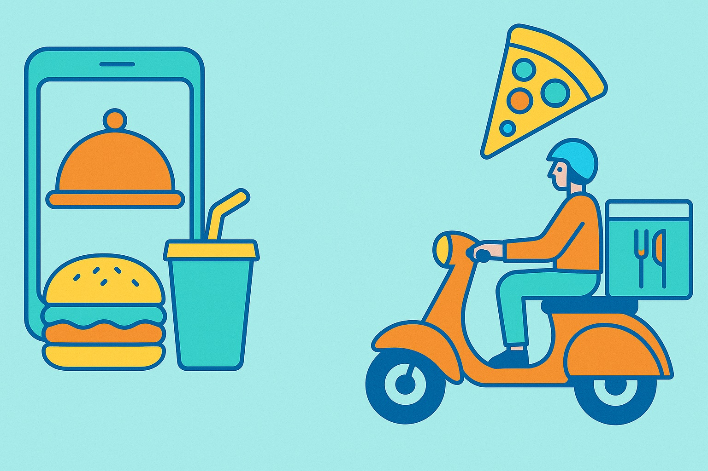
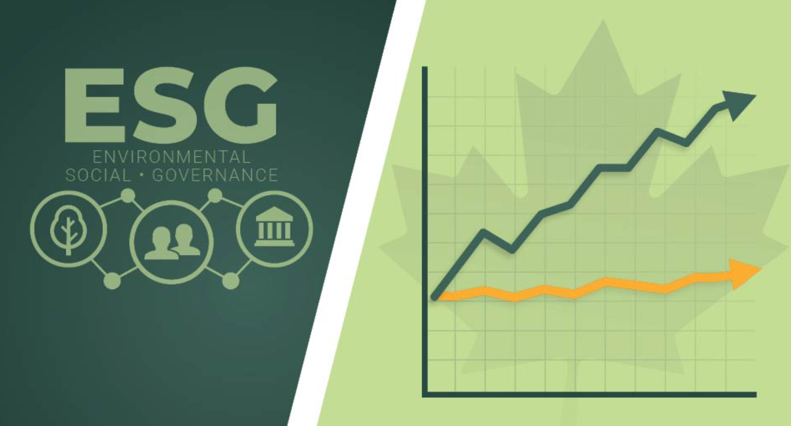

Portfolio
Zhongyi Hu
Data scientist & ML practitioner · turning messy data into clear decisions
Selected projects
Promotion response prediction
Predicts customer engagement with retail promotions using RFM features and gradient boosting.
Conversational RAG agent
GitHub documentation assistant with intent routing, support tickets, CRM operations, and guardrails.

Last-mile delivery optimization
Prescriptive routing & driver assignment for Uber Eats — from single-driver MIP to a scalable real-time heuristic.

ESG Performance & Financial Returns
Institutional-scale panel analysis across 18,443 firm-years examining whether ESG performance predicts profitability and stock returns.
Project title
A short one-liner describing what this project solves.